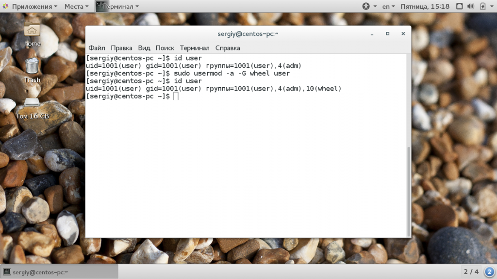
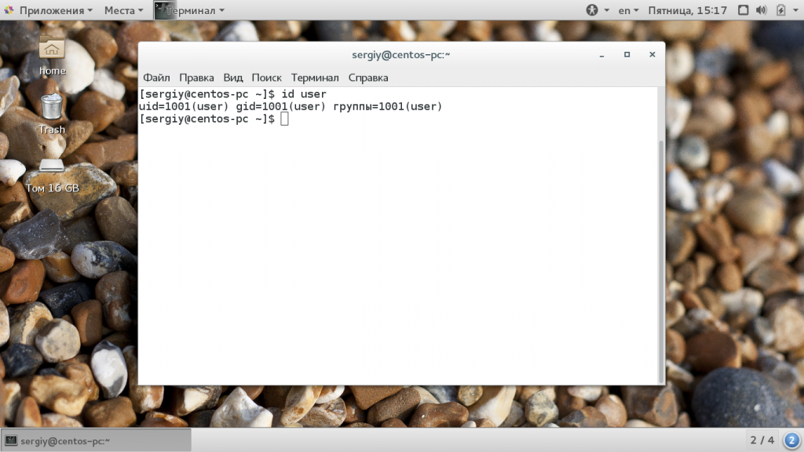
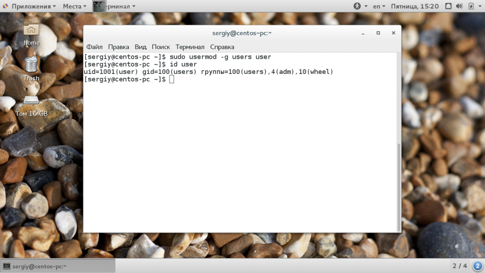
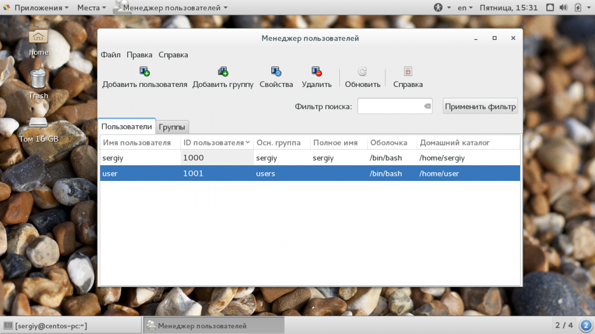
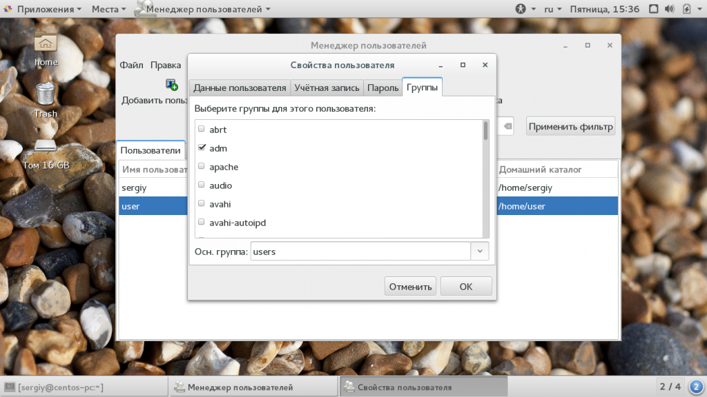

Как добавить пользователя в группу Linux
Как я уже сказал, для каждого пользователя существует два типа групп, это первичная, основная для него группа и дополнительные.
Как обычно, лучше всего будет добавлять пользователя в группу через терминал, поскольку это даст вам больше гибкости и возможностей. Для изменения параметров пользователя используется команда usermod. Рассмотрим ее опции и синтаксис:
$ usermod опции синтаксис
Здесь нас будут интересовать только несколько опций с помощью которых можно добавить пользователя в группу root linux. Вот они:
У команды намного больше опций, но нам понадобятся только эти для решения нашей задачи. Теперь рассмотрим несколько примеров. Например, чтобы добавить пользователя в группу sudo linux используйте такую комбинацию:
sudo usermod -a -G wheel user

Если вы не будете использовать опцию -a, и укажите только -G, то утилита затрет все группы, которые были заданы ранее, что может вызвать серьезные проблемы. Например, вы хотите добавить пользователя в группу disk и стираете wheel, тогда вы больше не сможете пользоваться правами суперпользователя и вам придется сбрасывать пароль. Теперь смотрим информацию о пользователе:
id user

Мы можем видеть, что была добавлена указанная нами дополнительная группа и все группы, которые были раньше остались. Если вы хотите указать несколько групп, это можно сделать разделив их запятой:
sudo usermod -a -G disks,vboxusers user
Основная группа пользователя соответствует его имени, но мы можем изменить ее на другую, например users:
sudo usermod -g users user

Теперь основная группа была изменена. Точно такие же опции вы можете использовать для добавления пользователя в группу sudo linux во время его создания с помощью команды useradd.
Добавление пользователя в группу через GUI
В графическом интерфейсе все немного сложнее. В KDE добавление пользователя в группу linux выполняется с помощью утилиты Kuser. Мы не будем ее рассматривать. В Gnome 3 возможность управления группами была удалена, но в разных системах существуют свои утилиты для решения такой задачи, например, это system-config-users в CentOS и Users & Groups в Ubuntu.
Для установки инструмента в CentOS выполните:
sudo yum install system-config-users
Дальше вы можете запустить утилиту через терминал или из главного меню системы. Главное окно утилиты выглядит вот так:

Выполните двойной клик по имени пользователя, затем перейдите на вкладку "группы". Здесь вы можете выбрать отметить галочками нужные дополнительные группы, а также изменить основную группу:

Для установки утилиты в Ubuntu запустите такую команду:
sudo apt install gnome-system-tools
Здесь интерфейс будет немного отличаться, утилита будет выглядеть так же, как и системная программа настройки пользователей только появится возможность управления группами Linux.
В этой небольшой статье мы рассмотрели как добавить пользователя в группу linux. Это может быть очень полезно для предоставления пользователю дополнительных полномочий и разграничения привилегий между пользователями. Если у вас остались вопросы, спрашивайте в комментариях!